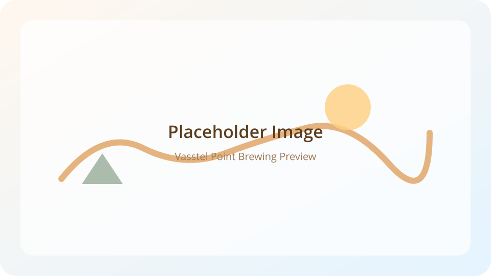
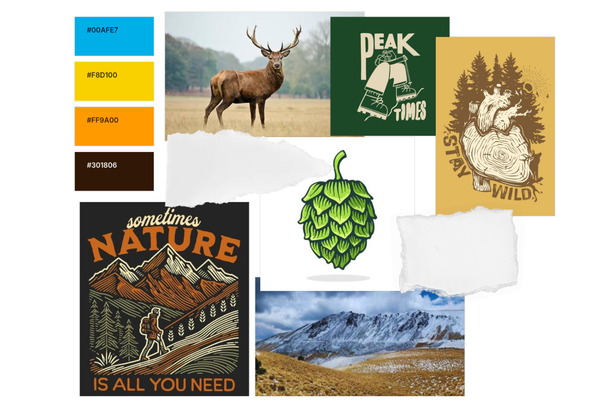
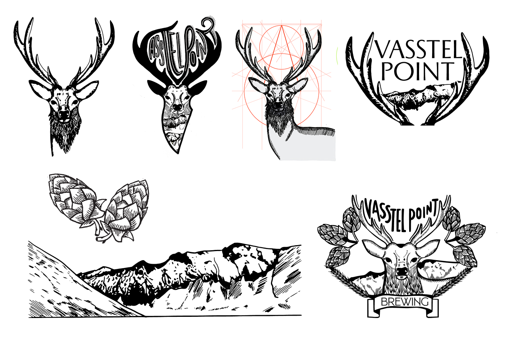
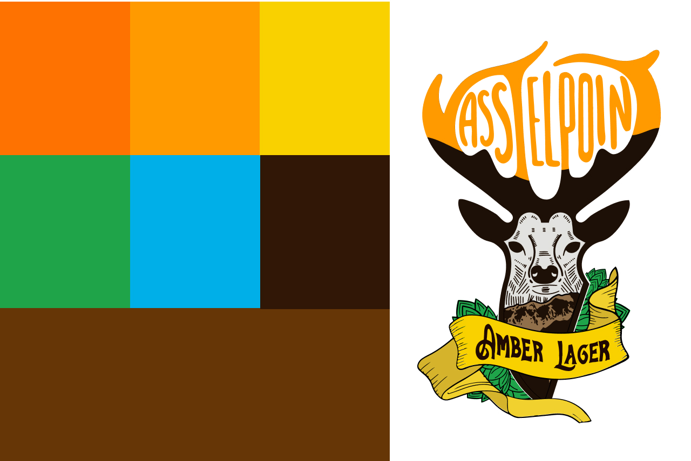
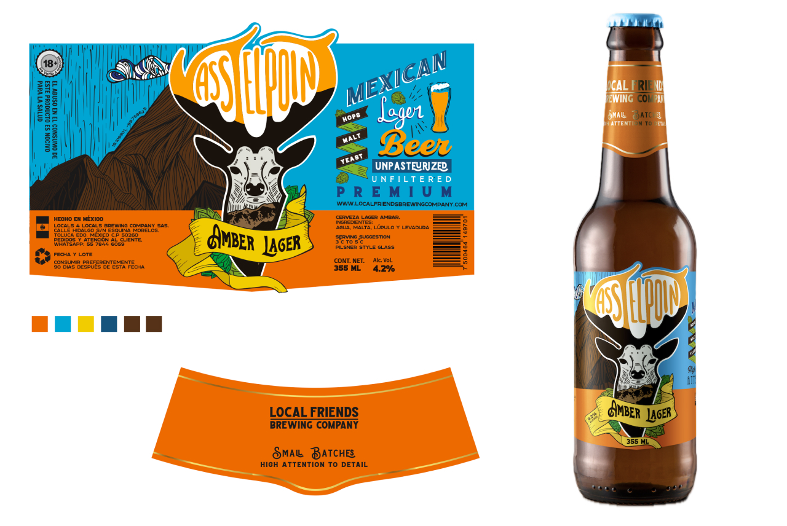

Vasstel Point Brewing
Label Design & Illustration System

Overview
This project began before Vasstel Point Brewing officially launched. At that stage, the beer was still in development and the brand identity needed to be defined from the ground up.
The brewery’s founder reached out with a clear intention: to create a small-batch, highly artisanal beer inspired by hiking culture, outdoor exploration, and the landscapes surrounding the Nevado de Toluca. At the time, the craft beer scene in Mexico was still emerging, and authenticity and hand-made character were central to the vision.
My role was to translate that vision into a visual identity that felt natural, handcrafted, and rooted in place. The label needed to reflect the brewing process, the outdoor inspiration, and the spirit of exploration behind the brand—before the beer even reached the shelf.

⸻
Moodboard
I started the process by familiarizing myself with the craft beer world. I researched other breweries, explored the history behind their logos, and analyzed how illustration and symbolism were used to communicate craftsmanship, origin, and personality.
This research was followed by ongoing conversations with the founders, which helped clarify their goals and refine the visual direction. Together, we aligned on the elements that best represented the brand’s identity.
The moodboard brought these ideas together, highlighting the key components of the visual language:
- The deer, as a symbol of strength, wilderness, and regional identity.
- The Nevado de Toluca mountains, representing place and origin.
- A handcrafted illustration style, inspired by woodcut and engraving techniques.
- An earthy color palette, rooted in natural tones and amber hues.
This step ensured a shared visual foundation before moving into illustration and concept development.

⸻
Concept Development
From there, I moved into illustration exploration using Procreate on my iPad. This phase allowed for a more organic and hands-on approach, where sketching and iteration could happen quickly.
I focused on developing the most important visual elements: the deer as the central figure, the surrounding mountains inspired by the Nevado de Toluca, and hops and barley as subtle references to the beer-making process.
During the early sketches, the deer’s antlers emerged as a particularly strong visual element. I began experimenting with their shape and structure, eventually using them as a way to frame and form the beer’s name, Vasstel Point.
This exploration helped bring illustration and lettering together into a single, cohesive concept—reinforcing the handcrafted nature of the brand.

⸻
Design & Illustration
The final illustration was refined using hand-drawn lines and textured shading to evoke a traditional, engraved aesthetic. This approach was intentional, reinforcing the idea of craftsmanship and small-batch production.
The deer became the main focal point of the label, supported by mountain landscapes that ground the design in its natural inspiration. Hop and barley details were integrated subtly to reference the brewing process without overpowering the composition.
Custom lettering and illustrated banners helped maintain a cohesive and organic visual system, where typography and illustration work together rather than as separate elements.

⸻
Final Design & Impact
The final label brings together illustration, typography, and color into a clear and expressive visual system. Mockups demonstrate strong shelf presence, high readability, and a handcrafted identity aligned with the brand’s origins.
The beer was launched later that year and received strong market acceptance and positive feedback. The label helped establish Vasstel Point Brewing’s identity from its first release, supporting brand recognition and differentiation in a competitive craft beer market.

Design Reflection
Although my professional focus is primarily on digital products and UX-driven experiences, illustration remains an essential part of how I think and design. It allows me to approach problems with a strong sense of storytelling, visual hierarchy, and intentional detail.
Working on illustration-led branding projects helps me reconnect with my creative foundations while strengthening skills that directly translate to digital product design—such as system thinking, visual consistency, and narrative clarity. This balance between craft and structure is a core part of my design practice.